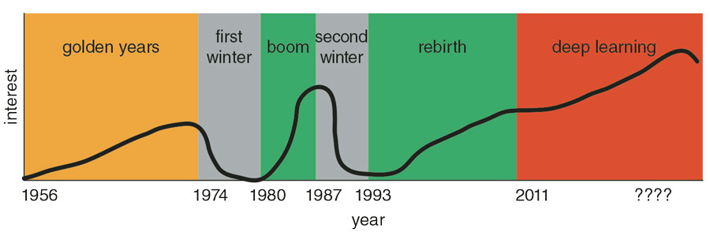
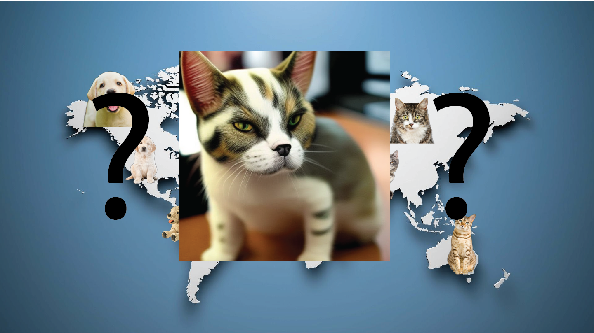
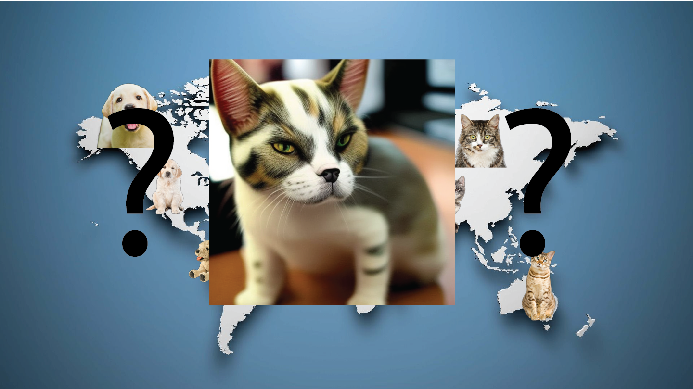
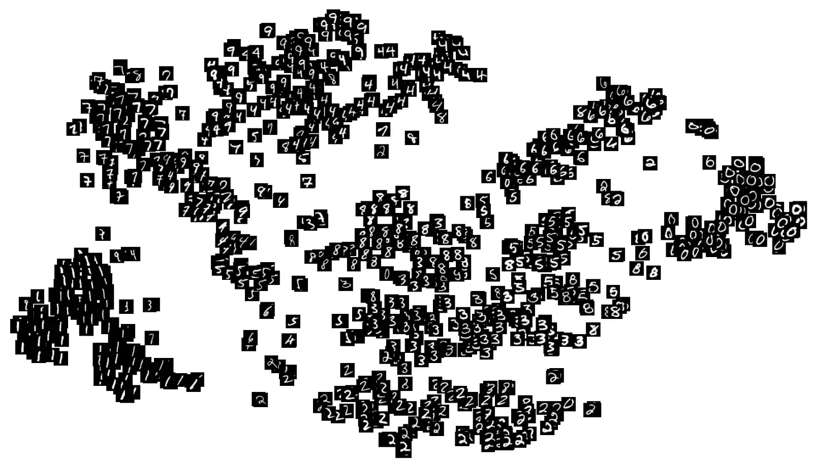
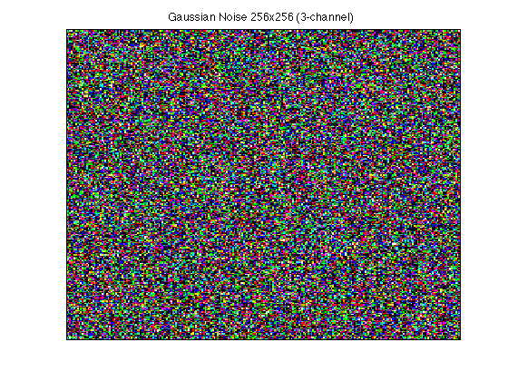

Generative AI
AI history
New hype?
Old hype!
Why succesful now?
- computer power ++
- mathematicians + time
- ...
- Data, lots of data
- community: computer science + creatives
How does AI work?
it's complicated to explain, but easy to use
Compare with MP3 compression
now for AI
encoding step

latent space vector
Latent Space?
lets take a latent space walk
What is latent space


 

Why latent space?
- how AI "memorises" text or images
- how concepts are stored and compared
- images with vector close: very similar concepts!
- lexica.art
training on data
src link
train your own latent space
Stable diffusion example
- lot's of data eg: the laion-5b dataset
- 5.85 billion image-text pairs.
- a hard drive of 240TB
- 32 x 8 x A100 GPUs
- cost: approx $ 600,000
- carbon cost: 11,250 kg CO2
- or ± 2.5 cars driving 15,000 km/year
talking about data
AI model represent trainings-data
trainings-data...
- represents digital society
- represents many artists
- cleaned for big audience (NSFW, violence, ...)
- ≠ (version of) model, ≠ dataset
lets encode some text too
latent space vector
features visualisation
Remember this one?
right, a decoder is missing!
latent diffusion model
type prompt
get image
What
do you need to know to get started
Prompt Engineering
A prompt consists of :
- 1. A (main) topic
- 2. an environment
- 3. details
- 4. atmosphere and context of the scene
- 5. style (artist, medium)
tools or models
- AI model: engine
- tools: car chassis
tools or models: example
- AI model: Stable Diffusion
- tools: dreamstudio, InvokeAI, ComfyUI, ...
- ≠ tools:
- ≠ payment
- ≠ possibilities
- ≠ inspiration
if you have a decent GPU!
AI models
- different models are trained on different datasets
- they work optimal on the resolution of the original dataset!
- Stable Diffusion 1.5: 512x512
- Stable Diffusion XL: 1024x1024
The seed

The problem modern computers have with randomness is that it doesn’t make mathematical sense.
The seed
Starting point of your image generation

The seed

Base prompt

Smiling

Angry

Excited
Complete this image in a way that proves you won’t be replaced by AI